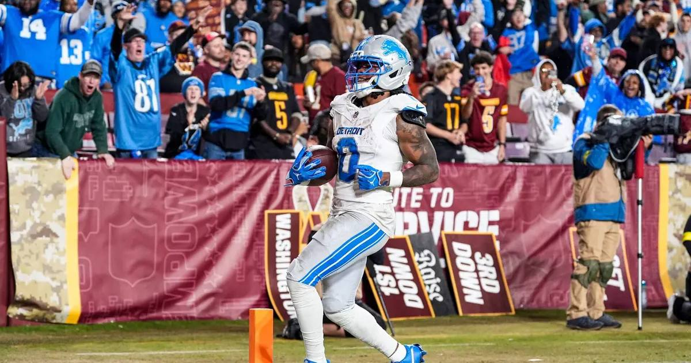

Lions and Bears both reach 8-2 before Thanksgiving
Detroit and Chicago both moved to 8-2 on Sunday — Gibbs scored twice in the fourth quarter to close out Tampa Bay, and Caleb Williams threw two touchdowns as the Bears held off New Orleans. They meet Thursday at Ford Field with first place on the line.

Disclosure: this post contains affiliate links. I earn a commission on qualifying purchases.
The NFC North's Thanksgiving showdown is a first-place game. Detroit and Chicago both won on Sunday to reach 8-2, and now they meet at Ford Field on Thursday with the division lead on the line.
Detroit: Gibbs closes it out in the fourth
Jahmyr Gibbs ran for two touchdowns as the Lions beat the Buccaneers 31-21 at Ford Field — Detroit's sixth straight win, and the team remains undefeated at home this season.
Both of Gibbs's scores came in the fourth quarter. A 1-yard run midway through the period put Detroit up 10, and after sacks from Trevor Nowaske and Derrick Barnes ended Tampa Bay's next possession, Gibbs added a 4-yard touchdown with 1:55 left. The second score was his 13th rushing touchdown of the season.
Gibbs finished with 98 rushing yards on 23 carries and caught four passes for 20 yards. Jared Goff threw for 279 yards and two touchdowns without an interception, including a 57-yard strike to Jameson Williams and a 14-yard score to Amon-Ra St. Brown.
Baker Mayfield, playing through a foot injury, threw for 187 yards and two touchdowns — both to Ted Hurst III — but the Bucs fell to 3-7.
Final: 31; 21
Gibbs rushing: 98 yards, 2 TD; —
Goff passing: 279 yards, 2 TD, 0 INT; —
Mayfield passing: —; 187 yards, 2 TD
Chicago: takeaways set up both touchdowns
Caleb Williams threw for two touchdowns as the Bears beat the Saints 21-13 at Soldier Field — Chicago's fifth straight win.
Williams went 15 of 23 for 181 yards with one interception. Both scoring throws came in the second quarter and both were set up by takeaways: a 3-yard shovel pass to D'Andre Swift after a fumble recovery, then a 15-yard pass to Colston Loveland — who hurdled a defender on his way in — after Dillon Thieneman's interception.
The defense did the rest. Jeffery Simmons had three of Chicago's six sacks, and New Orleans never led. The Saints closed the gap late but couldn't finish the comeback.
It was a bounce-back afternoon for Williams in one specific way: his last outing, a 27-24 win over Tampa Bay on November 8, saw him throw a career-high four interceptions. This time the two touchdowns came with just the one pick.
What Thursday means
The two wins set up the cleanest possible Thanksgiving game. The Lions and Bears are tied at the top of the NFC North, and Thursday's game at Ford Field decides who spends the holiday weekend in first place. Detroit has won six in a row; Chicago has won five.
Watch
Watch the full game highlights: Tampa Bay Buccaneers vs. Detroit Lions | 2026 NFL Season Week 11 — YouTube. Full-game highlights from Ford Field, including Gibbs's two fourth-quarter touchdowns and Goff's 57-yard strike to Williams.
Gear up: Lions and Bears jerseys and gear (Gibbs, Goff, Williams): via Fanatics